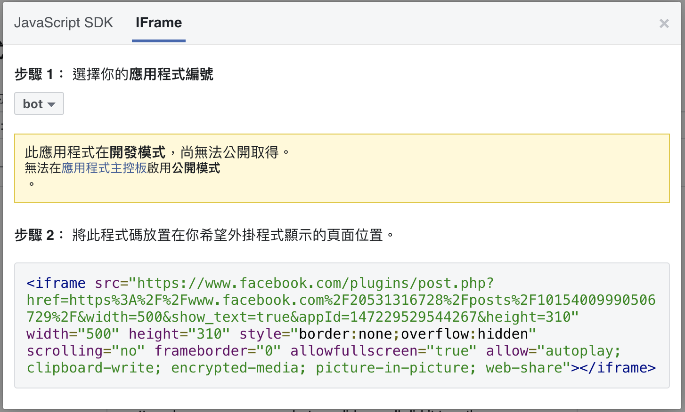

IFrame
<iframe>標籤用來定義 inline frame，一個 inline frame 嵌入在當前的頁面裡。- https://www.w3schools.com/tags/tag_iframe.ASP
常見使用情境
頁面內含外部套件，如下：
- 社交外掛程式：https://developers.facebook.com/docs/plugins/embedded-posts/
- editor
- map

切換 Iframe
語法ㄧ：透過 ID
<iframe id="ifr" name="demo" src="demo.html" height="200" width="300"></iframe>
driver.switch_to_frame("ifr")
語法二：透過 Name
<iframe id="ifr" name="demo" src="demo.html" height="200" width="300"></iframe>
driver.switch_to_frame("demo")
語法三：透過 index
<iframe id="ifr" name="demo" src="demo.html" height="200" width="300"></iframe>
<iframe id="ifr" name="demo" class='second' src="width.html" height="200" width="300"></iframe>
<iframe id="ifr" name="demo" src="width.html" height="200" width="300"></iframe>
driver.switch_to_frame(1)
語法四：透過元素
iframe = driver.find_element_by_css_selector('iframe')
driver.switch_to.frame(iframe)
回到預設頁面區塊
driver.switch_to.default_content()